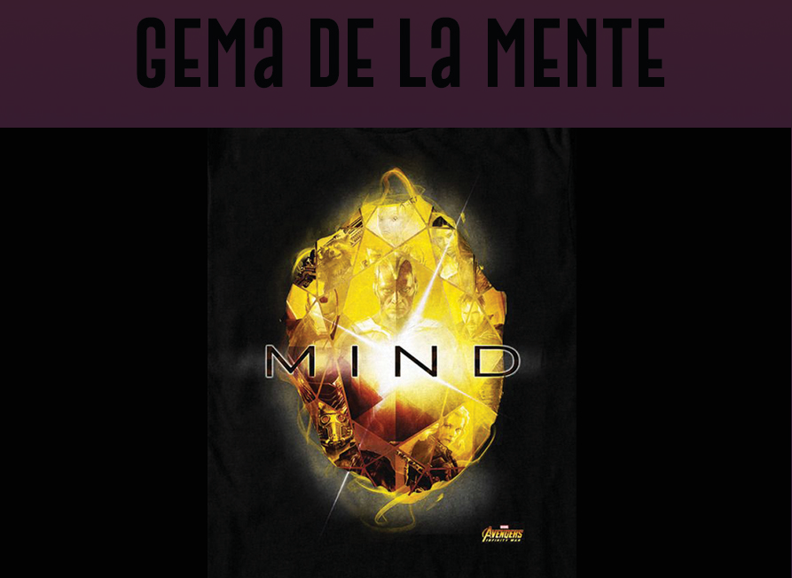
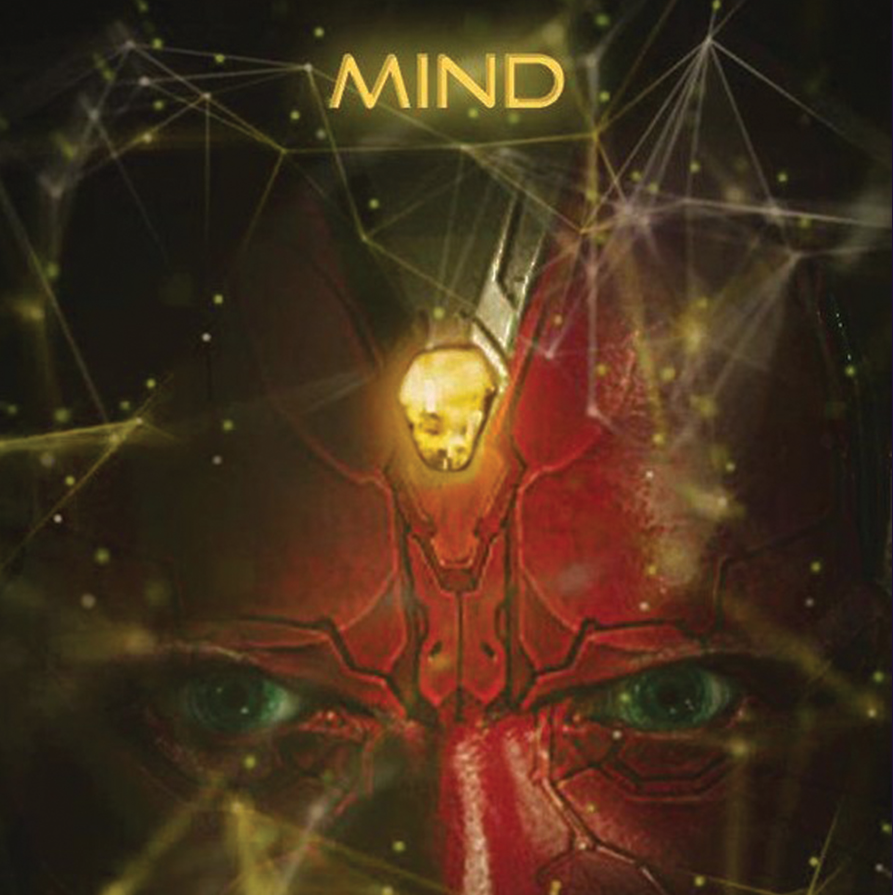

|  |
Color: amarillo Unidad de contención original: Cetro El Cetro fue un arma que usó la Gema de la Mente en el interior de un módulo de color azul, que también enmascaraba la presencia de la gema. Stark veía originalmente la Gema como una fuente de energía, mientras que una vez que J.A.R.V.I.S. tuvo la oportunidad de estudiar la Gema él dijo que era más parecido a una computadora muy potente. Esta gema tenía el poder para someter a las mentes de los demás, doblándolas a la voluntad del usuario, así como hacer resaltar la conciencia del usuario, además de otorgar capacidades telequinéticas. luego se usó para darle vida a vision. La gema también se dice que aumenta en gran medida la inteligencia de los que son capaces de manejarla, como se muestra en los casos de Loki y Wolfgang von Strucker. Cuando Loki fracasó en su intento de dominar la Tierra, el Cetro cayó en manos de S.H.I.E.L.D. y con el tiempo éste pasó a HYDRA gracias a los agentes dentro de la organización. Posteriormente HYDRA usó el Cetro para varios experimentos, otorgarles poderes a los gemelos Wanda y Pietro Maximoff, y otras funciones tales como el control mental, y la proyección de energía. Luego fue usada para crear a Visión quien fue su ultimo portador Apareció por primera vez en Los Vengadores, bajo el poder de loki, dentro del cetro otorgado por Thanos. |
|  |